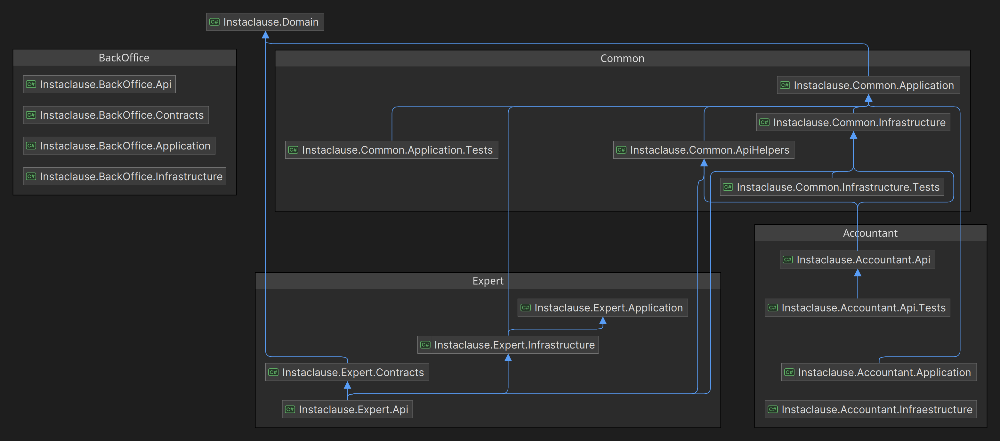

instaclause-platform
Programming Principles
- Clean Architecture
- Domain Driven Design
- CQRS (Under evaluation)
Solution

Instaclause.Domain
This project contains the domain entities and the domain services. It is responsible for the domain logic of the application.
Expert
Instaclause.Expert.Api
This project is the main entry point for the Expert API. It contains the controllers and the configuration for the API.
Instaclause.Expert.Application
This project contains the application services and the domain services. It is responsible for the business logic of the application.
Instaclause.Expert.Infrastructure
This project contains the data access layer and the infrastructure services. It is responsible for the data access and the infrastructure services.
Accountant
Instaclause.Accountant.Api
Instaclause.Accountant.Application
Instaclause.Accountant.Infrastructure
BackOffice
Instaclause.BackOffice.Api
Instaclause.BackOffice.Application
Instaclause.BackOffice.Infrastructure
Common
Instaclause.Common.ApiHelpers
Instaclause.Common.Application
Instaclause.Common.Infrastructure
Nuget Packages
- ErrorOr (1.10.0)
- Scriban (5.9.1)
- EntityFrameworkCore (8.0.2)
- Npsql (8.0.2)
- Swashbuckle (6.4.0)
- StyleCop.Analyzers (1.2.0)
- MsTest (3.2.2)